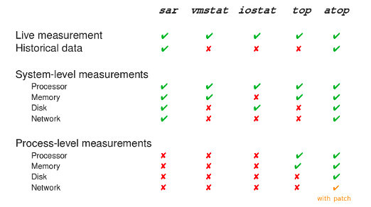

Linux Performance Analysis In Less Than 10 Seconds
If you are using a Linux System or managing a Linux server, you might come across a situation where a process is taking too long to complete. In this article we will see how to track down such performance issues in Linux.
Netflix TechBlog has an article on how to anlyze Linux performance in 60 seconds. This article provides 10+ tools to use in order to see the resource usage and pinpoint the bottleneck.
It is strenuous to remember all those tools/options and laborious to run all those commands when working on multiple systems.
Instead, we can use atop, a tool for one stop solution for performance analysis. Here is a comparision of atop with other tools from LWN.

atop shows live & historical data measurement at system level as well as process level. To get the glimpse of system resource(CPU, memory, network, disk) usage install and run atop with
$ sudo apt install --yes atop $ atop

By default, atop shows resources used in the last interval only and sorts them by CPU usage. We can use
$ atop -A -f 4
-A sorts the processes automatically in the order of the most busy system resource.
-f shows both active as well as inactive system resources in the ouput.
4 sets refresh interval to 4 seconds.
Just by looking at the output of atop, we get a glimpse of overall system resource usage as well as individual processes resource usage.